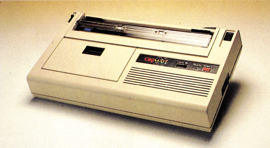
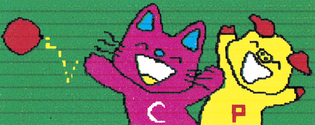
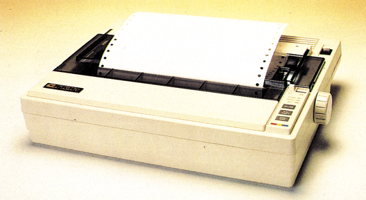
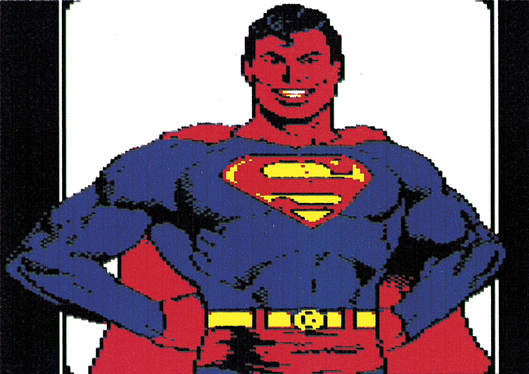
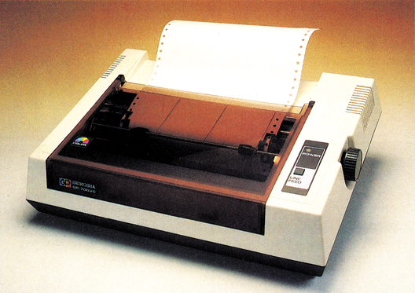
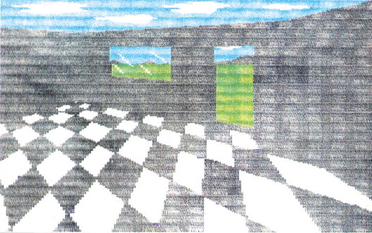
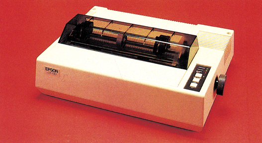
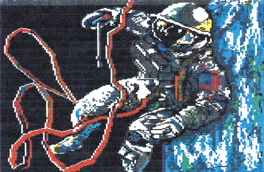
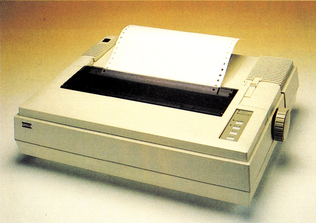
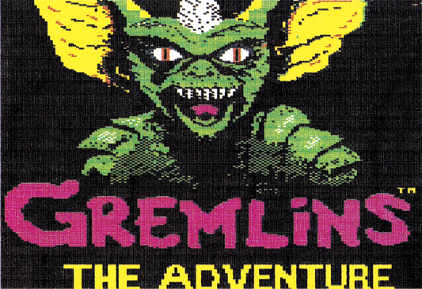

Die Regenbogendrucker
Jetzt kommt Farbe aufs Papier — rund um den C 64 gesellen sich eine Reihe farbfähiger Drucker. Sie verhelfen dem C 64 zu gedruckter Farbenpracht. Doch welcher ist der beste? Verschiedene Funktionsprinzipien erleichtern nämlich nicht gerade die Entscheidung. Folgen Sie uns zum Fuß des Regenbogens.
Noch vor gar nicht all zu langer Zeit war es ein absoluter Luxus, wenn der mit Bedacht ausgesuchte und angeschlossene Drucker ein Abbild des Bildschirmes in schwarzweiß auf das Papier zauberte. Einzelne Farben konnte und kann man dabei nur in Form verschiedener Musterungen oder Intensitäten darstellen. Doch wie das monochrome Fernsehen der Vorläufer des Farbfernsehens ist, so scheinen auch die Drucker verschiedenster Hersteller und Bauarten, tief in die Farbpalette gegriffen zu haben und sich vom farblosen Gesellen in schillernde Gestalten der Farbtechnik verwandelt zu haben. Dabei bedienen sich die Hersteller beinahe ebenso vieler Techniken, wie Farben hervorgezaubert werden können. Wir haben die wichtigsten Vertreter der unterschiedlichen Techniken für Sie zusammengetragen und gegeneinander antreten lassen — zu einer Schlacht mit dem Farbbeutel.
Die Technik
Generell kann man zwischen drei verschiedenen Methoden unterscheiden, mit denen die Farbe auf dem Papier befestigt wird. Die teuerste und deshalb von uns auch nicht weiter getestete Methode ist die der Tintenstrahldrucker. Mehrere Tintendüsen, mit verschiedenen Farben gefüllt, sorgen dabei durch Elektronik gesteuert, für die richtige Farbzusammenstellung. Diese Technik stellt wohl den optimalen Kompromiß aus Geschwindigkeit, Lautstärke, Farbechtheit und Vielfarbigkeit dar. Ein ganz besonderer Vorteil ist dabei die Eigenschaft der Tinte, sich auf dem Papier noch etwas zu verteilen, so daß harmonische Übergänge entstehen und häßliche weiße Flecken zwischen den Druckzeilen meistens vermieden werden. Das Farbmischverhalten ist bei dieser Technik ebenfalls am besten, denn Flüssigkeiten vermischen sich eben leichter als die, wenn auch winzigen, Farbpartikel beim Thermo- und Matrix-Prinzip (siehe unten). Zukünftig werden die Tintenstrahldrucker im mittleren bis oberen Preisbereich wahrscheinlich große Erfolge verbuchen können.
Die wohl brillantesten Farben lassen sich mit dem Thermo-Transfer-Verfahren erzielen. Gegenüber dem reinen Thermo-Verfahren wird die Notwendigkeit eines hitzeempfindlichen Spezialpapiers vermieden. Dabei ist die Farbe in Form einer Wachsschicht, ähnlich dem Carbonband einer Schreibmaschine, auf einem Kunststoffträger (Farbband) aufgedampft. Ob die Farben dabei nun übereinander oder hintereinander auf dem Träger plaziert sind, ist letztendlich nur eine Frage des Konstruktionsprinzips — und das variiert von Hersteller zu Hersteller. Viel entscheidender ist eher, wie die Punktinformationen des Computerbildes in konkrete Farben umgesetzt werden. Dazu hat man sich einiges einfallen lassen, denn alle getesteten Drucker sind in der Lage, weit mehr als die auf ihrem Farbband zur Verfügung stehenden Farben zu erzeugen. Man bedient sich dazu der Technik der additiven Farbmischung, die Sie sicherlich noch aus der Physikstunde (Abteilung Optik) kennen. Das heißt, durch Ubereinanderlagern mehrer Farben mit unterschiedlichen Intensitäten lassen sich aus wenigstens drei Farben beinahe alle Farbkombinationen erstellen. Konkret zu Druck gebracht werden diese Farben dann durch einen besonders raffinierten Druckkopf, der, aus einer Punktreihe bestehend, durch Erhitzung die Farbe vom Träger löst. Festgebacken durch die Hitze und gehalten durch Adhäsionskräfte bleibt die Farbe dann fest auf dem Papier haften. Da die Hitzeelemente des Druckers abkühlen müssen, bevor der Kopf für den Druck des nächsten Zeichens bereit ist, sind der Geschwindigkeit allerdings Grenzen gesetzt. So gesehen sind Thermo-Transfer-Drucker eigentlich nichts anderes als die guten alten Matrixdrucker, bei denen die Farbe statt durch Kraft mit Hitze auf das Papier gebracht wird. Das hört man natürlich auch, oder besser gesagt, man hört es nicht, denn außer einem mitunter störenden Klappern der Antriebsmechanik flüstern diese Drucker (zirka 50 dB/A).
Auch die guten alten Nadel-Matrixdrucker geben sich mittlerweile farbig. Hier kann man zwei generelle Strömungen beobachten.
Nadel, Tinte oder Hitze
Zum einen sind das die Spezialisten, die hauptsächlich farbig drucken und sich beim Textdruck eher bescheiden in den Hintergrund verziehen. Zum anderen sind das die Multifunktions-Drucker, die meistens durch eine zusätzliche Farboption ihre künstlerischen Fähigkeiten entdecken. Der Vorteil dabei liegt auf der Hand — man erhält einen vollwertigen Textdrucker, der eben auch farbig drucken kann. Meistens sind die Farbfähigkeiten so gut, daß sie sogar die Spezialisten unter den Farbdruckern übertreffen. Dabei ist das angewandte Prinzip denkbar einfach — an Stelle des schwarzen Farbbandes wird ein mehrfarbiges Band eingelegt, das seinen Namen zu recht trägt. In bunter Reihe liegen dort, Farbe an Farbe, sauber aufgereihte Streifen übereinander. Die bereits genannte Farboption, beim Spezialisten bereits fest eingebaut, besteht dann nur noch aus einer Mechanik, die durch wildes Auf- und Abbewegen des Farbbandes dafür sorgt, daß immer die richtige Farbe vor dem Druckkopf liegt. Matrixdrucker produzieren zwar nicht das gleiche leuchtende Bild wie die Thermo-Transfer-Drucker, zeichnen sich dafür aber durch eine wesentlich höhere Geschwindigkeit, Flexibilität und Geräuschentwicklung aus. Leider sind sie nicht in der Lage, wie die Thermo-Transfer-Drucker, auf durchsichtigen Folien ihre Kunst zu beweisen, sie drucken nur auf dem Stoff, auf dem alle Matrixdrucker drucken — nämlich Einzel- oder Endlospapier.
Klein, preiswert und farbig zeigt sich der Okimate 20 (Bild 1), ein Thermo-Transfer-Drucker, den es in einer Commodore- und einer Centronics-Version (je 888 Mark) gibt. Beide Modelle können übrigens durch Austauschen eines Moduls später in das andere umgebaut werden. Der Oki besteht zu mindestens 80 Prozent aus Plastik und unhandlichen Hebeln.

Die farbigen Gesellen
So gestaltet sich das Arbeiten mit diesem Winzling mitunter auch schon etwas umständlich. Angefangen bei der Farbbandkassette (schwarzweiß oder farbig), über das Einlegen des Papiers (alle Papierarten), bis zum Programmieren des Druckers fordert der Okimate 20 einiges an Gewöhnung und Geduld. Trotzdem ist das, was der Oki 20 auf das Papier zaubert (Bild 2), makellos; die Farben leuchten und werden korrekt wiedergegeben. Für den Okimate gibt es zwar auch ein schwarzes Farbband, für den Textdruck ist er aber durch seine relativ niedrige Geschwindigkeit (effektiv unter 80 Zeichen pro Sekunde) und das teure Farbband (17 Mark) nur bedingt geeignet. Die Domäne des Okimate 20 ist hauptsächlich der farbige Druck, vornehmlich in Form von Bildschirm-Hardcopies. Um den Bildschirm originalgetreu auf das Papier zu übertragen, kann man sich gleich zwei verschiedener Hilfsmittel bedienen. Gute Dienste beim Drucken von Grafikbildern (Koala-Painter, Doodle, Blazing Paddles, Paint Magic und andere) leistet das Oki-Print-Set. Es besteht aus Farbbändern (1 farbig, 1 schwarzweiß), einer Diskette, Handbuch, Normal-, Thermo-, und Hochglanzpapier. Das alles kostet nur 77 Mark, ein echter Hammer für alle Ckimate-20-Besitzer. Das Print Set wird eigentlich nur noch durch das Super-Pic-Modul (179 Mark) übertroffen. Damit wird es möglich, jeden beliebigen Bildschirm »einzufrieren«, bei Bedarf farblich zu verändern und in bis zu fünf verschiedenen Größen auszudrucken. Super-Pic gibt es bislang in Versionen für den Okimate 20, den Seikosha GP 700 und in einer Schwarzweiß-Version für alle grafikfähigen Drucker (Siebenoder Acht-Nadel-Grafik). Das Ganze funktioniert auch aus Spielen heraus, so daß Sie beispielsweise ohne Schwierigkeiten beweisen können, daß Sie ein Adventure gelöst haben. Aber zurück zum Oki, zusammen mit Print-Set oder Super-Pic lassen sich, wenn auch langsam, brillante Hardcopies erstellen, die allerdings nicht ganz billig sind. Ein Farbband kostet 17 Mark und reicht für ungefähr 10 bis 12 Bilder. Ein Bild kostet somit ungefähr 1,50 Mark, ein stolzer Preis, der aber bei gelungenem Bild gerade noch zu vertreten ist. Nach Aussage des Herstellers soll der Okimate 20 übrigens zur CeBIT auch BTX-fähig mit bis zu 127 Farben sein.

Der TPX-80 (Bild 3) von C.Itoh arbeitet nach einem ähnlichen Prinzip wie der Okimate 20, zeichnet sich aber durch eine wesentlich höhere mechanische Stabilität und Bedienungskomfort aus. Der TPX-80 besitzt außerdem neben seiner Farbfähigkeit auch einen vollwertigen NLQ-Textmodus (24 x 15 Punkte). Extrem leise, mit gestochen scharfem Schriftbild und sogar relativ flott (80 Zeichen/Sekunde normal, und relativ schnell 45 Zeichen/Sekunde in NLQ) brennt der TPX-80 die Farbe (Farbband 22 Mark, schwarzweiß 18 Mark) auf das Papier.

Den Anspruch, nicht nur ein Grafikdrucker zu sein, unterstreicht der TPX-80 zusätzlich durch seinen umfangreichen, Befehlssatz, der nach ESC/P genormt ist (wie Epson FX-80). Bislang gibt es diesen solide wirkenden Heim- und Bürodrucker zum Preis von 1140 Mark nur in einer Version mit Centronics-Schnittstelle. Durch Verwendung eines Epson-Interfaces (siehe Test in Ausgabe 2/86) lassen sich aber alle Funktionen des Druckers über den C 64 aufrufen. Auch mit dem TPX-80 kann man wunderschöne Hardcopies (Bild 4) auf Normal- und Hochglanzpapier und sogar auf Klarsichtfolie (für Overhead-Projektoren) anfertigen. Ein Programm dafür haben wir in Ausgabe 11/85 im Druckertest des JX-80 veröffentlicht.

Farbe durch Hitze
Eine Version von Super-Pic für den TPX-80 (und alle anderen Drucker nach ESC/P-Norm) ist laut Aussage des Herstellers ebenfalls angekündigt.
Altbekannt und unüberhörbar ist der Seikosha GP 700 VC (Bild 5). Er ist der erste Vertreter der Nadel-Matrixdrucker. Wie das »VC« im Namen schon andeutet ist der GP 700 VC direkt an den C 64/C 128 anschließbar. Er arbeitet wie ein gewöhnlicher Matrixdrucker allerdings mit dem Unterschied, daß ein vierfarbiges Farbbandverwendetwird. Durch seine nicht gerade überragende Druckgeschwindigkeit (38 Zeichen/Sekunde) und ein nicht mehr zeitgemäßes Schriftbild eignet sich der GP 700 VC hauptsächlich für farbige Hardcopies (Bild 6), wobei allerdings gegenüber den Thermo-Transfer-Druckern einige Qualitätsabstriche gemacht werden müssen. Die Lärmentwicklung des GP 700 VC, der mit 899 Mark relativ preisgünstig ist, liegt fast an der Schmerzgrenze — reden wir besser nicht davon.


Ebenfalls seit langem bekannt ist der JX-80 von Epson (Bild 7, 1948 Mark). Wir haben diesen Drucker in der Ausgabe 11/85 ausführlich getestet. Dabei konnten wir dem JX-80 exzellente Farbfähigkeiten (Bild 8) attestieren. Es bleibt zwar unbestritten, daß ein Matrixdrucker konstruktionsbedingt immer etwas hinter der Qualität eines Thermo-Transfer-Druckers hinterherhinken muß. Dafür druckt der JX-80 mit 160 Zeichen/Sekunde mindestens doppelt so schnell, als die Drucker des Thermo-Prinzipes. Außerdem kann man den JX-80 mit schwarzem Farbband ebenfalls als vollwertigen Textdrucker verwenden, wenn man von der fehlenden NLQ-Fähigkeit einmal absieht. Besonders hervorzuheben ist die einfache Bedienung des JX-80, dessen Befehle für viele andere Drucker zum Vorbild wurden. Der ESG-»R«-Befehl zur Farbsteuerung sowie die Befehlssequenz für die Grafik wurden im Rahmen einer weitergehenden Normung (ESC/P-Norm) festgelegt. So verwenden beispielsweise der CItoh TPX-80 oder der anschließend beschriebene Fujitsu DX 2100 die gleichen Steuerbefehle. Dadurch lassen sich Programme für den JX-80 problemlos auch auf diesen Druckern einsetzen.


Bereits während des Tests in Ausgabe 2/86 zeigte der Fujitsu DX 2100 (Bild 9) wie zukunftsweisend sein Konzept ist. Die gekonnte Mischung aus Matrix- und Farbdrucker erhielt sowohl im Textdruck (NLQ 18 x 16-Matrix) als auch im Farbgrafikdruck beste Noten. Durch die sehr hohe Geschwindigkeit (220 Zeichen pro Sekunde) dauert auch eine farbige Hardcopy (Bild 10) nur wenige Minuten Qe nach Format). Auch hier gilt das beim JX-80 Gesagte: Die Farbqualität ist zwar hervorragend, leuchtet aber nicht so wie bei den Thermo-Transfer-Druckern. Leider lassen sich mit Nadel-Matrixdruckern auch keine Klarsichtfolien bedrucken. Dafür hat man den Vorteil, daß man den Farbdruck, ohne irgendwelche Kompromisse bei der Textfähigkeit eingehen zu müssen, erhält. Zusammen mit der Farbfähigkeit kostet der DX-2100 2388 Mark. Da man den Computer ja in der Regel sowohl für Textdruck, als auch für Grafikdruck verwendet, stellt dieses Konzept der »Multifunktionsdrucker« die vorläufig ideale Lösung für diese Zwecke dar.


Wer viel Platz auf dem Schreibtisch hat und nicht über 2000 Mark für einen Drucker ausgeben möchte, oder für den die Fähigkeiten eines Thermo-Transfer-Druckers besonders wichtig sind, kann sich natürlich auch zwei Drucker hinstellen. Für etwa 2500 Mark erhält man bereits je einen Könner des jeweiligen Faches. Eines ist jedenfalls sicher: Welchen Drucker man auch erwirbt, es macht unheimlich Spaß, die eigenen Kunstwerke nicht nur auf dem Bildschirm zu sehen, sondern auch quasi »handgreiflich« zu besitzen.
(aw)Okimate 20: Okidata GmbH, Emanuel-Leutze-Str. 8, 4000 Düsseldorf 11, Tel. 0211/ 5979401
TPX-80: C.Itoh Electronics, Roßstr. 96, 4000 Düsseldorf 30, Tel. 0211/45 49 80
GP 700 VC: Microscan, Überseering 31, Postfach 6017 05, Tel. 0 40/6 32 00 30 JX-80: Epson Deutschland GmbH, Zülpicher Str. 6, 4000 Düsseldorf 11, Tel. 0211/ 560310
DX-2100: Fujitsu Electronic GmbH, Sonnenstr. 29, 8000 München 2, Tel. 0 89/ 592891
Super-Pic: Deutschland: Rushware, An der Gümpgesbrücke 24, 4044 Kaarst 2, Tel. 0 2101/6 84 99
Schweiz: HILcU, Postfach, CH-3063 Ittigen Tel. 031/586656